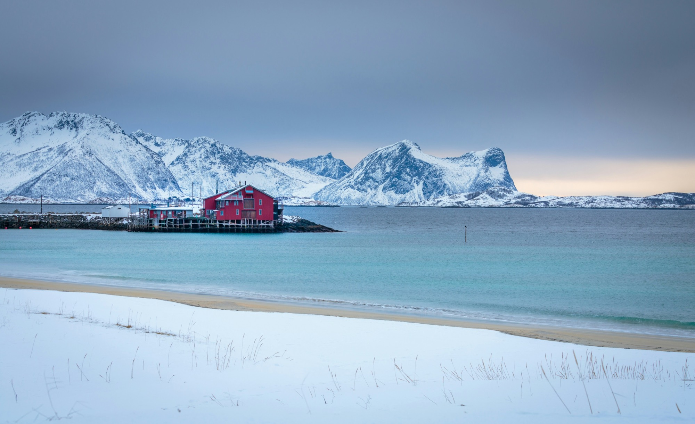
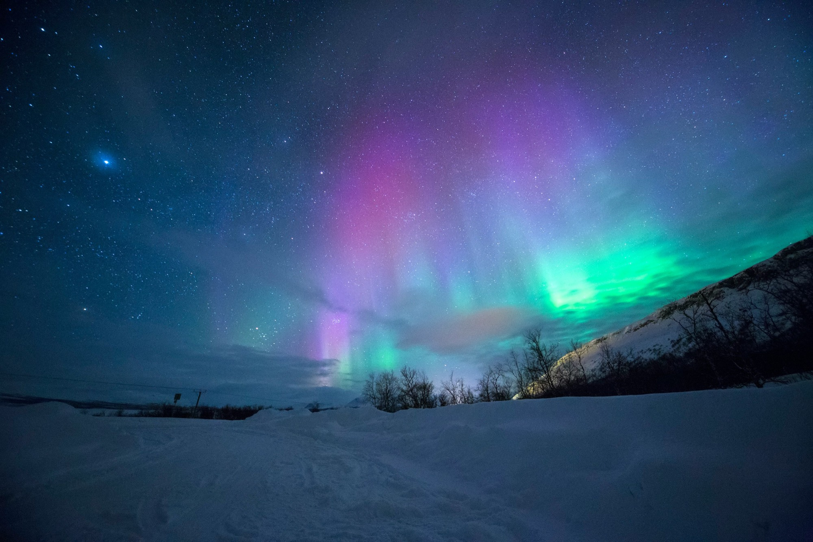
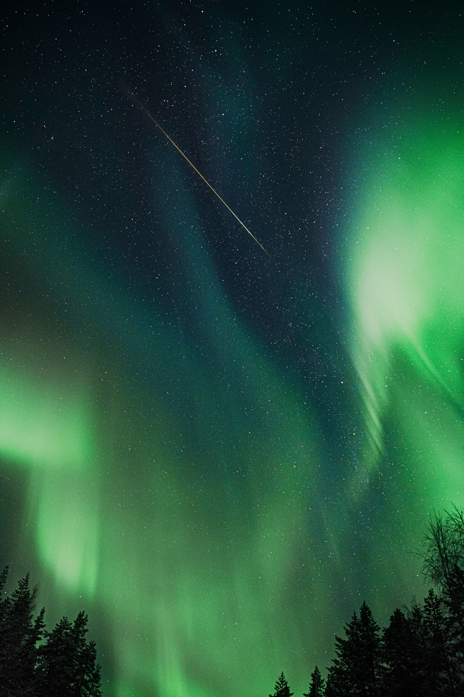

Cruise
Cruise
Senja Fjord Explorer
Six hours aboard a traditional Norwegian sjark — dramatic coastline, sea eagles, and Senja's mountains rising vertically from the water. The fjord as only the locals know it.

Private boat tours from Finnsnes into the heart of Senja — fjord cruises, fishing adventures, midnight sun voyages, and northern lights at sea.


Finnsnes is where the mainland meets the island. Cross the Gisund Bridge and you are on Senja — a place of jagged peaks, dark fjords, white-sand beaches and barely a soul. We show you the island from where it was always meant to be seen: the water.
Our traditional wooden sjark has worked these waters for years. Step aboard and let us take you into Senja's most dramatic corners — whether you're chasing the midnight sun, waiting for the aurora, hauling in your first catch, or simply watching the mountains rise from the sea.
All tours depart from Finnsnes harbour aboard a traditional sjark. Private groups only — no strangers, no shared boats.
Cruise
Six hours aboard a traditional Norwegian sjark — dramatic coastline, sea eagles, and Senja's mountains rising vertically from the water. The fjord as only the locals know it.
Fishing
Cast lines in Arctic waters, haul in the catch, and learn to gut and fillet your own fish on board — a hands-on taste of Senja's centuries-old fishing tradition.
Seasonal
The sun never sets. A late-evening voyage into the golden Arctic light — Senja's peaks bathed in colours that simply don't exist at any other latitude on earth.
Seasonal
Out on the fjord in the winter dark, far from any light pollution, with the aurora borealis rippling across the sky and its reflection shimmering on the water below.
Fill in the form and we'll confirm your booking within 24 hours — including departure time, what to bring, and everything you need to know before you step aboard.

Senja is one of Norway's best-kept secrets — a large island in Troms county where jagged peaks plunge almost vertically into dark fjords, white-sand beaches appear around unexpected corners, and the sea is still cold and clear and utterly wild. Seen from the land, it is spectacular. Seen from the water, it is something else entirely.
We leave Finnsnes harbour aboard our traditional wooden sjark and head into the heart of the island. For six hours the coastline unfolds — cliff faces that rise straight from the sea, narrow sounds where the mountains funnel the light, quiet bays that no road reaches. Sea eagles are common. Porpoises and seals appear without announcement. Your guide knows where to look.
This is not a sightseeing bus on the water. The pace is yours. We stop when something deserves stopping for, and move on when you're ready.
The waters around Senja have fed the communities of this coast for thousands of years. Cod, saithe, haddock and coalfish move through these fjords in the shadow of the mountains — and on this trip, you go after them the old-fashioned way.
Your guide sets you up with a fishing line and shows you the technique. When the line goes heavy, you haul it in yourself. Once the catch is on board, your guide teaches you how to gut and fillet the fish — skills that were once as ordinary in this part of Norway as tying your shoes. You take the fillets home at the end of the trip.
This is a genuine experience, not a performance. Catches vary — the sea makes no guarantees. But the time on the water, the mountains around you, and the connection to a centuries-old way of life are always there.
Above the Arctic Circle, the sun stops setting in late spring. For weeks, it circles the sky day and night — and the light it casts in those small hours is unlike anything else on earth. Warm, flat, golden and enormous, it skims across the peaks of Senja and turns the fjord into something almost impossible to photograph, and impossible to forget.
We depart in the evening, when the mainland has gone quiet and the fjord belongs entirely to us. The cruise takes you into Senja's most open stretches of water — where the mountains rise on all sides and the sky performs overhead. Your guide finds the spots where the light lands best. Hot drinks, silence, and the occasional splash of a porpoise. Time passes differently here.


The northern lights have no fixed appointment. They appear — sometimes faintly, sometimes overwhelming — when solar activity and clear skies align. What you can control is where you are when they do. Out on the water, away from any glow of town, with the mountains of Senja as your horizon and nothing between you and the sky, you are in about as good a position as it is possible to be.
We depart from Finnsnes once darkness has properly fallen and take the boat into Senja's open fjords. Your guide monitors forecasts and repositions as needed to find the darkest skies and the clearest view. Warm blankets and hot drinks are on board. When the lights appear, there is nothing to do but watch.
All tours depart from Finnsnes harbour. Finnsnes is on the mainland side of the Gisund strait — connected to Senja island by the Gisund Bridge — and is around 2 hours by car from Tromsø. We'll send you exact meeting point details when you confirm your booking.
A sjark is a traditional Norwegian coastal fishing vessel — sturdy, sea-going, and built for the conditions of northern Norway. Ours has a covered cabin, seating, and all required safety equipment. It is not a luxury yacht — it is the real working boat of this coast, and that is exactly the point.
Yes — every tour is exclusively for your group. No shared boats, no strangers. The vessel, your guide and the entire experience are yours for the duration. Standard tours accommodate groups of up to 6. Larger groups are welcome — contact us for a tailored quote.
It is always colder on the water than on land. Warm base layers, a windproof outer layer, and waterproof trousers are strongly recommended year-round. In winter, dress as warmly as you would for a long walk in freezing temperatures — then add a layer. Deck shoes or boots with grip are ideal. We'll send a full kit list when you confirm.
No one can guarantee the northern lights — they depend on solar activity and clear skies, neither of which can be controlled. What we can do is put you in the best possible position: out on dark water, away from light pollution, with an experienced guide monitoring forecasts and moving the boat to maximise your chances. September to March is the season, and Senja's latitude gives excellent conditions when the sky cooperates.
Absolutely. The Fisherman's Haul requires no prior experience. Your guide teaches you everything — how to set the line, how to feel the bite, how to haul it in, and how to gut and fillet the fish afterwards. Most guests have never done it before. That's rather the point.
Senja is worth visiting in every season — but they offer very different experiences. Summer (June–August) brings the midnight sun, calm seas, and long golden days. Autumn (September–November) brings dramatic weather, the first northern lights, and rich colours. Winter (December–March) offers the aurora in full force and a raw, quiet Arctic landscape. Spring (April–May) sees the return of light and the first warmth. We run tours year-round.